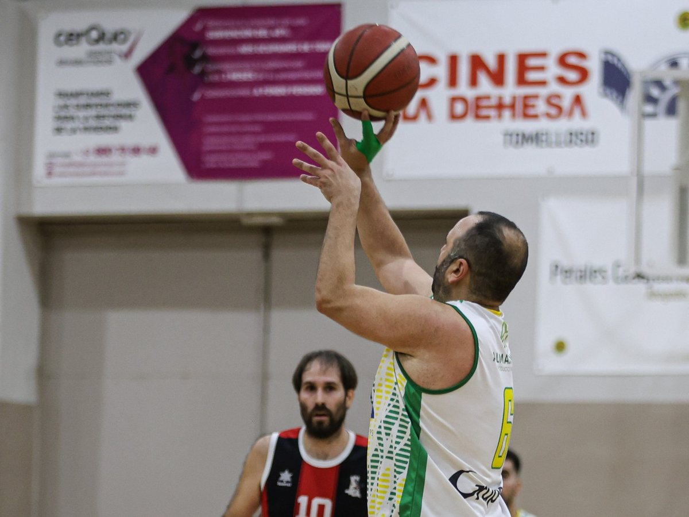

Los de Aarón Núñez, con un parcial de 14-0 a caballo entre el primer y el segundo cuarto, encarrilaron pronto el partido y vencieron al C.B. Mota Max Infraestructuras por 86-62 en una tarde de homenaje a José Luis Albiñana

Foto: Andrés Parra Fotografía
Valbrokers CB Tomelloso 86 - 62 C.B. Mota Max Infraestructuras
Categoría: Liga STM 1ª Autonómica Masculina FBCLM (Grupo A) — Jornada 7
Fecha: sábado 21 de noviembre de 2026, 18:30 h — Pabellón San José (Tomelloso)
Parciales: 21-16, 20-12 (41-28), 22-10 (63-38), 23-24 (86-62)
Tocaba reencontrarse con la victoria en casa y el Valbrokers CB Tomelloso no dejó escapar la ocasión. Los de Aarón Núñez se impusieron este sábado 21 de noviembre al C.B. Mota Max Infraestructuras por 86-62, en la séptima jornada del Grupo A de la Liga STM 1ª Autonómica masculina, y cerraron la primera vuelta con seis victorias en siete partidos ante su afición del Pabellón Municipal San José.
Núñez salió con Javi Bonillo, Daniel Bonillo, Jaime Yáñez, Carlos Castaño y Miguel Ángel Lara. Por los moteños empezaron José Santiago Rodrigo, Jesús Almodóvar, Jaime Morata, Álvaro Morata y David Villaescusa. El C.B. Mota se plantó en el San José sin ningún complejo y llegó a mandar en el primer cuarto (11-14), con Rodrigo muy activo. El partido estuvo igualado hasta los últimos minutos del periodo, cuando los locales encontraron el aro: del 15-16 se pasó al 21-16 con el que se cerró el primer cuarto.
Fue el inicio de la escapada. El Tomelloso mantuvo el ritmo al arranque del segundo cuarto y alargó el parcial hasta un 14-0 que dejó el luminoso en 29-16. Los moteños, muy fuertes en el rebote con Villaescusa, intentaron seguir en el partido, pero los tomelloseros no levantaron el pie y al descanso se llegó con un 41-28.
Tras el paso por los vestuarios llegó el golpe definitivo. Los locales salieron muy enchufados, con un 7-0 en los dos primeros minutos (48-28), y Miguel Ángel Lara se echó el equipo a la espalda con 11 puntos en el cuarto. Con buena defensa, rebote y transiciones rápidas, el tercer cuarto se cerró con un 22-10 de parcial y un 63-38 en el electrónico que dejaba el partido decidido.
En el último cuarto el C.B. Mota tuvo un buen arranque y llegó a ponerse a 20 (66-46), pero un 11-0 de los de Núñez, con triples de Castaño y Javi Bonillo, llevó la ventaja a su máximo, 31 puntos (77-46). A partir de ahí, con el partido ya resuelto, Aarón Núñez repartió minutos entre toda la plantilla hasta el definitivo 86-62.
Carlos Castaño fue el máximo anotador del Valbrokers CB Tomelloso con 18 puntos, 15 de ellos gracias a cinco triples. Le siguieron Miguel Ángel Lara (15), Javi Bonillo (14), Daniel Bonillo (12 puntos y 9 rebotes) y Mario Melero (12), mientras que Adrián Ramírez firmó 8 puntos y 13 rebotes. Desde el banquillo también participaron Carlos García, Víctor Calzada y Loup González. Por el C.B. Mota destacó Jaime Morata, con 20 puntos, seguido de José Santiago Rodrigo (14) y Jesús Almodóvar (12), además de los 17 rebotes de David Villaescusa.
Con este triunfo, el Valbrokers CB Tomelloso termina la primera vuelta como segundo clasificado del Grupo A, con seis victorias y una derrota, y se asegura su plaza en la Copa. Al final del partido, el club rindió un merecido homenaje a José Luis Albiñana, uno de los pioneros del deporte en Tomelloso, que recientemente cumplió 98 años. Fue el broche a una tarde especial en el San José.